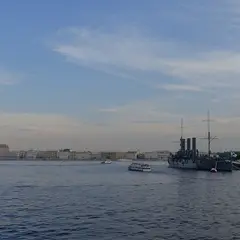
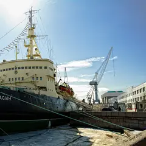
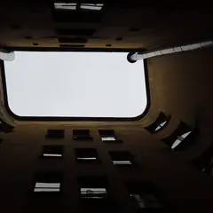
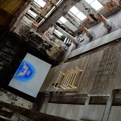
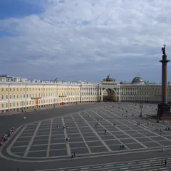

Подборку собрали 22 ноября, прошедшие события скрыты. Свежая афиша — на главной
Подборка · данные на 22 ноября
Куда сходить на свидание в Петербурге
Здесь 98 планов для двоих: прогулка, музей или шоу, а рядом — где поужинать, обычно не дальше 20 минут пешком. 45 планов укладываются примерно в 1 500 ₽ на человека, 42 мы отметили как удачные для первого свидания. Ещё 40 событий на ближайшие две недели — концерты, спектакли и выставки, куда удобно сходить вдвоём. Понравился план — нажми «Позвать сюда»: соберётся приглашение-игра, а ответ с днём и временем вернётся к тебе.
- 98 планов
- 165 мест
- 40 событий
Готовые планы для свидания 24 из 98
- Парк Александрия · Парк · ж/д Новый Петергоф
- 8 минут пешкомДворец Коттедж · Музей
Сначала идёте по аллеям парка к заливу, потом заходите в маленький дворец в шести минутах. Тихо, без толп парадного Петергофа.
Открыть план: Александрия и дворец у заливаПозвать сюда: Александрия и дворец у залива
Фото: Egregiu, CC BY-SA 4.0 · Wikimedia Commons
- Museum Route 66 · Музей · м. Невский проспект
- 3 минуты пешкомСпас на Крови · Музей
- 9 минут пешкомЧАО Какао · Какаочная
Фотографируетесь в декорациях старого кино, проходите мимо Спаса на Крови и греетесь какао в пяти минутах. Лёгкий план, где есть чем заняться и о чём говорить.
Открыть план: Америка 60-х и какаоПозвать сюда: Америка 60-х и какао
Фото: Рустам Абдрахимов, CC BY 3.0 · Wikimedia Commons
- Музей «Аптека доктора Пеля» · Историческая аптека-музей · м. Василеостровская
- 24 минуты пешкомСтанция метро «Горный институт» · Новая станция метро
Склянки и шкафы старой аптеки на 7-й линии, потом новая станция «Горный институт» со светильниками-кристаллами.
Открыть план: Аптека Пеля и станция-кристаллПозвать сюда: Аптека Пеля и станция-кристалл
Фото: Florstein, CC BY-SA 4.0 · Wikimedia Commons
- Театр Академии танца Бориса Эйфмана · Театр балета · м. Чкаловская
- 7 минут пешкомDOJO · Ресторан
Спектакль в театре Академии Эйфмана, затем пять минут пешком до DOJO — гриль и азиатские коктейли.
Открыть план: Балет и японский ужинПозвать сюда: Балет и японский ужин
Фото: Viktorinkalexeeva, CC BY-SA 4.0 · Wikimedia Commons
- Дом с башнями · Доходный дом-«замок» · м. Петроградская
- 6 минут пешкомНабережная реки Карповки · Набережная
- 5 минут пешкомМечта · Кофейня
От дома-замка на площади спускаетесь к Карповке и идёте вдоль воды, а греться заходите в кофейню — она в пяти минутах от набережной.
Открыть план: Башни, Карповка и матчаПозвать сюда: Башни, Карповка и матча
Фото: Grigorius m, CC BY-SA 4.0 · Wikimedia Commons
- Думская башня · Смотровая площадка · м. Невский проспект
- 6 минут пешкомНабережная канала Грибоедова · Набережная
- 7 минут пешкомOy! · Коктейльный бар
Поднимаетесь на башню к закату, спускаетесь к каналу Грибоедова и минут за десять доходите до коктейльного бара. Сначала виды, потом разговор.
Открыть план: Башня над Невским и коктейлиПозвать сюда: Башня над Невским и коктейли
Фото: Vadim Indeikin, CC BY-SA 3.0 · Wikimedia Commons
- Театральная библиотека · Библиотека · м. Гостиный двор
- 2 минуты пешкомУлица Зодчего Росси · Улица
- 4 минуты пешкомOy! · Коктейльный бар
Заходите на выставку в старинную библиотеку, выходите прямо на идеально симметричную улицу Росси и через пять минут пешком садитесь в коктейльном баре.
Открыть план: Библиотека, улица Росси и коктейлиПозвать сюда: Библиотека, улица Росси и коктейли
Фото: Chirukhin Igor, CC BY-SA 4.0 · Wikimedia Commons
- Дворцовая площадь · Площадь · м. Адмиралтейская
- 4 минуты пешкомПышки на Большой Морской · Пышечная
Вечерняя прогулка по Дворцовой площади, а через три минуты — пышки, которые продают до 23:00.
Открыть план: Дворцовая и пышкиПозвать сюда: Дворцовая и пышки
Фото: Godot13, CC BY-SA 4.0 · Wikimedia Commons
- Литературно-мемориальный музей Достоевского · Музей · м. Владимирская
- 3 минуты пешкомБа · Ресторан русской кухни
Квартира Достоевского в двух минутах от щичной: после музея — горячие щи и соленья, очень петербургский осенний вечер.
Открыть план: Достоевский и тарелка щейПозвать сюда: Достоевский и тарелка щей
Фото: Александровы АГ, CC BY-SA 4.0 · Wikimedia Commons
- Санкт-Петербургский планетарий · Планетарий · м. Горьковская
- 11 минут пешкомRoots le petit bar · Бар
Сеанс под куполом планетария, потом восемь минут через парк до камерного бара с живой музыкой. Сначала смотрите на звёзды, потом спокойно разговариваете.
Открыть план: Звёзды в планетарии и барПозвать сюда: Звёзды в планетарии и бар
Фото: NGC 7070, CC BY-SA 3.0 · Wikimedia Commons
- Masters Bookstore · Книжный об искусстве и дизайне · м. Чкаловская
- 23 минуты пешкомКаменный остров · Остров дач и особняков
Альбомы и кофе в Masters на Барочной, потом тихие аллеи и деревянные дачи Каменного острова.
Открыть план: Книжный об искусстве и Каменный островПозвать сюда: Книжный об искусстве и Каменный остров
Фото: Alexey Komarov, CC BY 3.0 · Wikimedia Commons

- Крейсер Аврора · Музей-корабль · м. Горьковская
- 14 минут пешкомЛетний сад · Сад
Осмотреть корабль, затем перейти Неву по Троицкому мосту и гулять по аллеям сада: около пятнадцати минут пешком.
Открыть план: Крейсер и Летний садПозвать сюда: Крейсер и Летний сад
Фото: Smart Vombat, CC BY 3.0 · Wikimedia Commons

- Ледокол «Красин» · Музей-корабль · м. Горный институт
- 13 минут пешкомМонастырские пышки · Пышечная
Осмотреть ледокол «Красин» у набережной, а через десять минут вдоль Невы согреться пышками и кофе.
Открыть план: Ледокол и пышкиПозвать сюда: Ледокол и пышки
Фото: Andrey Korchagin, CC BY-SA 2.0 · Wikimedia Commons
- Дом Лидваля · Доходный дом, северный модерн · м. Горьковская
- 19 минут пешкомДом с башнями · Доходный дом-«замок»
- 10 минут пешкомМузей петербургского авангарда (Дом Матюшина) · Дом-музей
Совы и пауки дома Лидваля, замок с башнями на площади Толстого и деревянный дом Матюшина среди камня.
Открыть план: Модерн ПетроградкиПозвать сюда: Модерн Петроградки
Фото: Wolfgang Moroder, CC BY-SA 3.0 · Wikimedia Commons
- Музей Штиглица · Музей · м. Чернышевская
- 3 минуты пешкомCasimir · Кофейня
Роскошные залы музея Штиглица, а через две минуты — уютная кофейня с осенним меню, чтобы согреться супом или оладьями.
Открыть план: Музей Штиглица и тыквенный супПозвать сюда: Музей Штиглица и тыквенный суп
Фото: Lion10~commonswiki, CC BY-SA 4.0 · Wikimedia Commons
- Парадная с ротондой (дом Яковлева) · Парадная с ротондой · м. Сенная площадь
- 6 минут пешкомПышечная на Садовой · Пышечная
Заглянуть в парадную с ротондой на Гороховой, а через пять минут пешком согреться пышками у Апраксина двора.
Открыть план: Ротонда и пышкиПозвать сюда: Ротонда и пышки
Фото: Artyom Svetlov, CC BY-SA 4.0 · Wikimedia Commons
- Парадная с ротондой (дом Яковлева) · Парадная с ротондой · м. Сенная площадь
- 9 минут пешкомДом Флоу · Кофейня в особняке модерн
Круглая лестница с колоннами до купола, потом кофе на пяти этажах особняка с оранжереей на Садовой.
Открыть план: Ротонда на Гороховой и кофе в доме модернПозвать сюда: Ротонда на Гороховой и кофе в доме модерн
Фото: Artyom Svetlov, CC BY-SA 4.0 · Wikimedia Commons

- Проходные дворы Толстовского дома · Проходные дворы, северный модерн · м. Достоевская
- 4 минуты пешкомДом-коммуна «Слеза социализма» · Дом-коммуна, конструктивизм
- 3 минуты пешкомАрхитектор · Коктейльный бар без вывески
Арки Толстовского дома, конструктивистская «Слеза социализма» и коктейль в «Архитекторе», который легко пройти мимо.
Открыть план: Рубинштейна: дворы Лидваля и бар без вывескиПозвать сюда: Рубинштейна: дворы Лидваля и бар без вывески
Фото: angelius1979, CC BY-SA 3.0 · Wikimedia Commons
- Спас на Крови · Музей · м. Невский проспект
- 3 минуты пешкомMaison Rouge · Ресторан
Сначала собор с мозаиками, потом пара минут пешком через площадь и неспешный ужин с рыбой и коктейлями вдвоём.
Открыть план: Спас на Крови и ужин рядомПозвать сюда: Спас на Крови и ужин рядом
Фото: Рустам Абдрахимов, CC BY 3.0 · Wikimedia Commons
- Музей-фотосалон Карла Буллы · Старинное фотоателье · м. Гостиный двор
- 2 минуты пешкомПышки из детства · Пышечная
Сначала старинное фотоателье на Невском, потом в двух минутах пешком — пышки с кофе, чтобы обсудить увиденное.
Открыть план: Старые снимки и пышкиПозвать сюда: Старые снимки и пышки
Фото: Karl Bulla, общественное достояние · Wikimedia Commons
- Таврический сад · Сад · м. Чернышевская
- 8 минут пешкомСундук · Арт-кафе
Круг по саду в сумерках, а дальше шесть минут до кафе, где вечером играют живую музыку. После прогулки приятно разглядывать интерьер и отогреваться.
Открыть план: Таврический сад и джазПозвать сюда: Таврический сад и джаз
Фото здания: Анастасия Юрьевна Львова, CC BY-SA 4.0 · Wikimedia Commons
- Оранжерея Таврического сада · Оранжерея · м. Чернышевская
- 4 минуты пешкомТаврический сад · Сад
- 8 минут пешкомСундук · Арт-кафе
Греетесь среди пальм, проходите через сад и минут через шесть садитесь обедать в кафе, увешанном редкостями. Тепло, прогулка и еда по очереди.
Открыть план: Тропики, сад и кафе с историейПозвать сюда: Тропики, сад и кафе с историей
Фото: Екатерина Борисова, CC BY-SA 4.0 · Wikimedia Commons
- Café Alto · Кафе-кофейня · м. Гостиный двор
- 4 минуты пешкомМузей-фотосалон Карла Буллы · Старинное фотоателье
Кофе среди винтажной мебели в Café Alto, потом старинное фотоателье Буллы, где можно сняться в декорациях.
Открыть план: Фотоателье Буллы и кофе на КараваннойПозвать сюда: Фотоателье Буллы и кофе на Караванной
Фото: Karl Bulla, общественное достояние · Wikimedia Commons
- Юсуповский сад · Сад · м. Садовая
- 5 минут пешкомПышечка · Пышечная
Прогулка по Юсуповскому саду, а через пять минут — пакет пышек и прогулка вдоль канала Грибоедова.
Открыть план: Юсуповский сад и пышкиПозвать сюда: Юсуповский сад и пышки
Фото: A.Z.Anisimov, CC BY-SA 4.0 · Wikimedia Commons


Места, куда зовут на свидание 18 из 165
Фурштатская ул., 42
Новое
Кафе, интерьер которого тридцать лет собирали из картин, витражей, самоваров и винила; вечерами играют джаз и блюз. Есть что разглядывать вдвоём.
Подробнее и маршрут: СундукПозвать сюда: Сундук
Фото здания: Анастасия Юрьевна Львова, CC BY-SA 4.0 · Wikimedia Commons
Каменноостровский пр., 35 (площадь Льва Толстого)
Новое
Две шестигранные башни Белогруда в духе английского замка держат всю площадь; на одной — циферблат со знаками зодиака. Силуэт эффектен в сумерках.
Подробнее и маршрут: Дом с башнямиПозвать сюда: Дом с башнями
Фото: Grigorius m, CC BY-SA 4.0 · Wikimedia Commons
Невский пр., 54
Новое
Интерьеры старинного фотоателье Буллы с небольшой экспозицией о мастере; в декорациях можно сниматься, бывают вечера с концертом. Лучше днём при дневном свете.
Подробнее и маршрут: Музей-фотосалон Карла БуллыПозвать сюда: Музей-фотосалон Карла Буллы
Фото: Karl Bulla, общественное достояние · Wikimedia Commons
наб. реки Фонтанки, 30
Свежая паста и бар на Фонтанке — лёгкий итальянский ужин вдвоём без лишней торжественности.
Подробнее и маршрут: Salone Pasta&BarПозвать сюда: Salone Pasta&Bar
Фото здания: GAlexandrova, CC BY-SA 4.0 · Wikimedia Commons
Дворцовая площадь, 6-8
Импрессионисты, Матисс и Пикассо в светлых анфиладах под стеклянными крышами, плюс большие сменные выставки.
Подробнее и маршрут: Главный штаб ЭрмитажаПозвать сюда: Главный штаб Эрмитажа
Фото: Max A. Khlopov, CC BY-SA 3.0 · Wikimedia Commons
Садовая ул., 21А
Новое
Кофейня на всех пяти этажах модернового дома 1903–1904 годов: лестница модерн, исторические окна, зелень на первом этаже и мини-оранжерея на втором.
Подробнее и маршрут: Дом ФлоуПозвать сюда: Дом Флоу
Фото здания: Артём Светлов, CC BY-SA 4.0 · Wikimedia Commons
Петроградская наб., 2
Новое
Легендарный крейсер-музей у Петроградской набережной, можно осмотреть палубы и каюты, а потом пройтись вдоль Невы.
Подробнее и маршрут: Крейсер АврораПозвать сюда: Крейсер Аврора
Фото: Smart Vombat, CC BY 3.0 · Wikimedia Commons
ул. Рубинштейна, 23
Квартира Сергея Довлатова на Рубинштейна: история писателя и Ленинграда 70-х в одном доме.
Подробнее и маршрут: Музей ДовлатоваПозвать сюда: Музей Довлатова
Фото: Kommunalka1912, CC BY-SA 4.0 · Wikimedia Commons
ул. Профессора Попова, 10
Новое
Деревянный дом среди каменной Петроградки, где в 1912 году Матюшин устроил штаб авангарда; мемориальные комнаты с работами его круга и Елены Гуро.
Подробнее и маршрут: Музей петербургского авангарда (Дом Матюшина)Позвать сюда: Музей петербургского авангарда (Дом Матюшина)
Фото: MaryannaNesina, CC BY 3.0 · Wikimedia Commons
Шпалерная ул., 43
Новое
Тёплый зимний сад с пальмами, кактусами и лианами — тропики посреди холодного сезона. Приятно зайти вдвоём, когда на улице слякоть.
Подробнее и маршрут: Оранжерея Таврического садаПозвать сюда: Оранжерея Таврического сада
Фото: Екатерина Борисова, CC BY-SA 4.0 · Wikimedia Commons
Гороховая ул., 57
Новое
Круглая лестничная клетка с шестью колоннами, уходящими к куполу; стены исписаны пожеланиями гостей. Главный кадр — снизу вверх по оси колонн. Жилой дом: днём пускают за небольшое пожертвование, приходить тихо и небольшой компанией.
Подробнее и маршрут: Парадная с ротондой (дом Яковлева)Позвать сюда: Парадная с ротондой (дом Яковлева)
Фото: Artyom Svetlov, CC BY-SA 4.0 · Wikimedia Commons
наб. канала Грибоедова, 2Б
Храм-музей, полностью покрытый мозаикой изнутри, — одна из самых ярких точек центра.
Подробнее и маршрут: Спас на КровиПозвать сюда: Спас на Крови
Фото: Рустам Абдрахимов, CC BY 3.0 · Wikimedia Commons
ул. Зодчего Росси, 2
Новое
Старинная библиотека с историей от XVIII века: сюда приходят на выставки, лекции и экскурсии. Тихий культурный повод для прогулки по центру вдвоём.
Подробнее и маршрут: Театральная библиотекаПозвать сюда: Театральная библиотека
Фото: Chirukhin Igor, CC BY-SA 4.0 · Wikimedia Commons
Миллионная ул., 25
Какаочная в двух шагах от Эрмитажа: густой горячий шоколад и авторское какао из окошка — согреться посреди прогулки.
Подробнее и маршрут: ЧАО КакаоПозвать сюда: ЧАО Какао
Фото здания: Александр Сигачёв, CC BY-SA 4.0 · Wikimedia Commons
Садовая ул., 54
Пейзажный сад у Сенной с большим прудом и островком; местные коты-старожилы встречают гостей, открыт с утра до позднего вечера.
Подробнее и маршрут: Юсуповский садПозвать сюда: Юсуповский сад
Фото: A.Z.Anisimov, CC BY-SA 4.0 · Wikimedia Commons
наб. реки Мойки, 22
Ресторан на верхнем этаже отеля у Дворцовой: панорама крыш и соборов, сезонная кухня.
Подробнее и маршрут: BellevueПозвать сюда: Bellevue
Фото: Moneycantbuy, CC BY-SA 4.0 · Wikimedia Commons

Кирочная ул., 8
Лютеранская церковь с выразительными голыми стенами: органные концерты, выставки, перформансы.
Подробнее и маршрут: АнненкирхеПозвать сюда: Анненкирхе
Фото: Екатерина Борисова, CC BY-SA 4.0 · Wikimedia Commons
ул. Рубинштейна, 13
Новое
Коктейльный бар без вывески: замкнутый полутёмный зал в строгом минимализме, где всё внимание на стойке. Дверь легко пропустить даже на Рубинштейна.
Подробнее и маршрут: АрхитекторПозвать сюда: Архитектор
Фото здания: Александр Сигачёв, CC BY-SA 4.0 · Wikimedia Commons


Куда сходить вдвоём в ближайшие две недели 8 из 40
Александринский театр · м. Гостиный двор · 500–12 000 ₽ · 18+
Новый «Ревизор» Валерия Фокина на сцене, где гоголевскую комедию впервые сыграли в 1836 году. Большой вечер — около 3 ч 20 мин, начало в 18:00.
Подробнее: Ревизор с продолжениемПозвать сюда: Ревизор с продолжениемБилеты : Ревизор с продолжением (страница с билетами, откроется в новой вкладке)
Фото: Bene Riobó, CC BY-SA 4.0 · Wikimedia Commons
Филармония им. Шостаковича, Большой зал · м. Невский проспект · 500–1 300 ₽ · 6+
Биг-бэнд Станислава Чигадаева в Большом зале Филармонии: Эллингтон, сюита из «Ла-Ла Ленда», латина и «Мамбо № 5». Билеты от 500 ₽ — отличный вечер для свидания.
Подробнее: Chigadaev Big Band. «Любовь и джаз»Позвать сюда: Chigadaev Big Band. «Любовь и джаз»Билеты : Chigadaev Big Band. «Любовь и джаз» (страница с билетами, откроется в новой вкладке)
Фото: Александровы АГ, CC BY-SA 4.0 · Wikimedia Commons

Эрмитаж, Главный музейный комплекс · м. Адмиралтейская
Шёлковые придворные халаты, портреты цинских полководцев и воссозданный кабинет китайского учёного в Гербовом зале. Выставка работает до 22 ноября — успейте.
Подробнее: Императорский Китай. Династия Цин (1644–1911)Позвать сюда: Императорский Китай. Династия Цин (1644–1911)Билеты : Императорский Китай. Династия Цин (1644–1911) (страница с билетами, откроется в новой вкладке)
Фото: Teddy fox78, CC BY-SA 3.0 · Wikimedia Commons
Иммерсивный театр «Морфеус» · м. Адмиралтейская · 3 000–3 500 ₽ · 18+
Иммерсивная комедия-расследование: после бурного девичника вы просыпаетесь в разгромленном номере, а невеста исчезла. Группа 2–8 человек, сеансы с 13:00 до 21:30.
Подробнее: До свадьбы доживётПозвать сюда: До свадьбы доживётБилеты : До свадьбы доживёт (страница с билетами, откроется в новой вкладке)
Мариинский театр · м. Садовая · 2 400–14 000 ₽ · 6+
Шекспировская история на музыку Прокофьева — один из самых эмоциональных балетов Мариинки. 20 и 21 октября в 19:00, а 22 ноября два показа: в 13:00 и 19:00.
Подробнее: Ромео и ДжульеттаПозвать сюда: Ромео и ДжульеттаБилеты : Ромео и Джульетта (страница с билетами, откроется в новой вкладке)
Фото: Jaimrsilva, CC BY-SA 4.0 · Wikimedia Commons
РОСФОТО · м. Адмиралтейская · 0+
Нижний Новгород 1896-го на старинных снимках: павильоны большой Всероссийской выставки, электрическая дорога и воздухоплавательный парк. Тихий музей рядом с Исаакием.
Подробнее: Россия 1896. К юбилею Нижегородской промышленной и художественной выставкиПозвать сюда: Россия 1896. К юбилею Нижегородской промышленной и художественной выставкиБилеты : Россия 1896. К юбилею Нижегородской промышленной и художественной выставки (страница с билетами, откроется в новой вкладке)
Театр им. Ленсовета, Большая сцена · м. Достоевская · 500–5 500 ₽ · 16+
Детективная дуэль двоих: знаменитый дирижёр и назойливый поклонник в гримёрке после концерта. Пьеса Дидье Карона, 1 ч 40 мин без антракта — ужин успеваете.
Подробнее: Фальшивая нотаПозвать сюда: Фальшивая нотаБилеты : Фальшивая нота (страница с билетами, откроется в новой вкладке)
Фото: Дарья Пичугина, CC BY-SA 2.5 · Wikimedia Commons
Театр им. Ленсовета, Малая сцена · м. Достоевская · 4 000–5 000 ₽ · 16+
Лирическая комедия Александра Галина: родные устраивают вдовцу-пенсионеру смотрины с тремя колоритными невестами. Камерная Малая сцена, начало в 19:00 или 19:30.
Подробнее: РетроПозвать сюда: РетроБилеты : Ретро (страница с билетами, откроется в новой вкладке)
Фото: Дарья Пичугина, CC BY-SA 2.5 · Wikimedia Commons


Как позвать
- Выбери план, место или событие — в карточке адрес, цены и маршрут в Яндекс Картах.
- Нажми «Позвать сюда» — соберётся приглашение-игра для свидания или голосование для компании.
- Отправь ссылку в любой мессенджер: тебе ответят, а компания отметит, куда и когда может. Бесплатно и без регистрации.